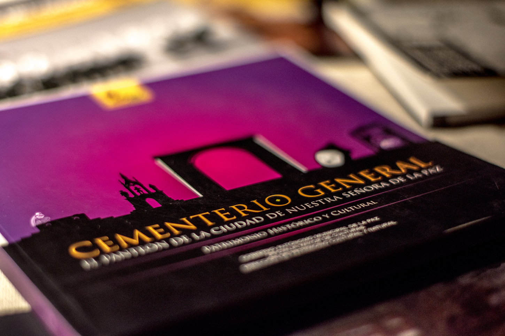
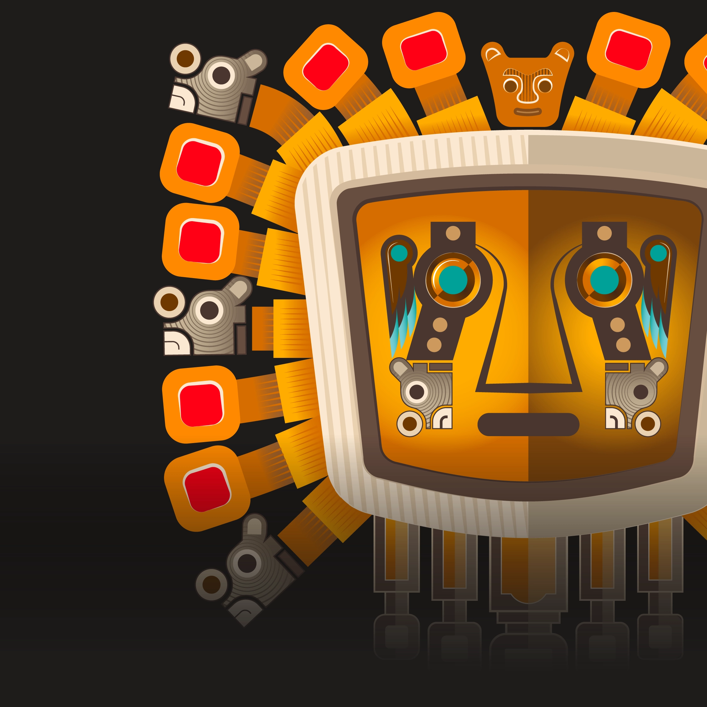
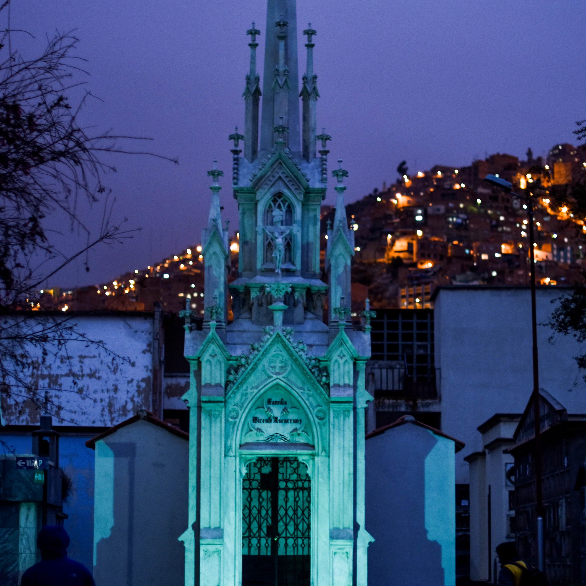
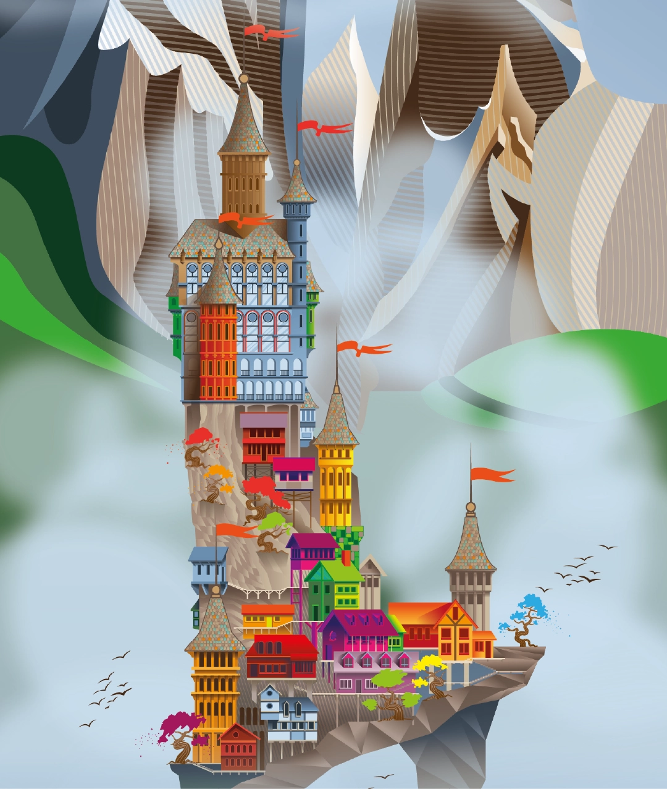
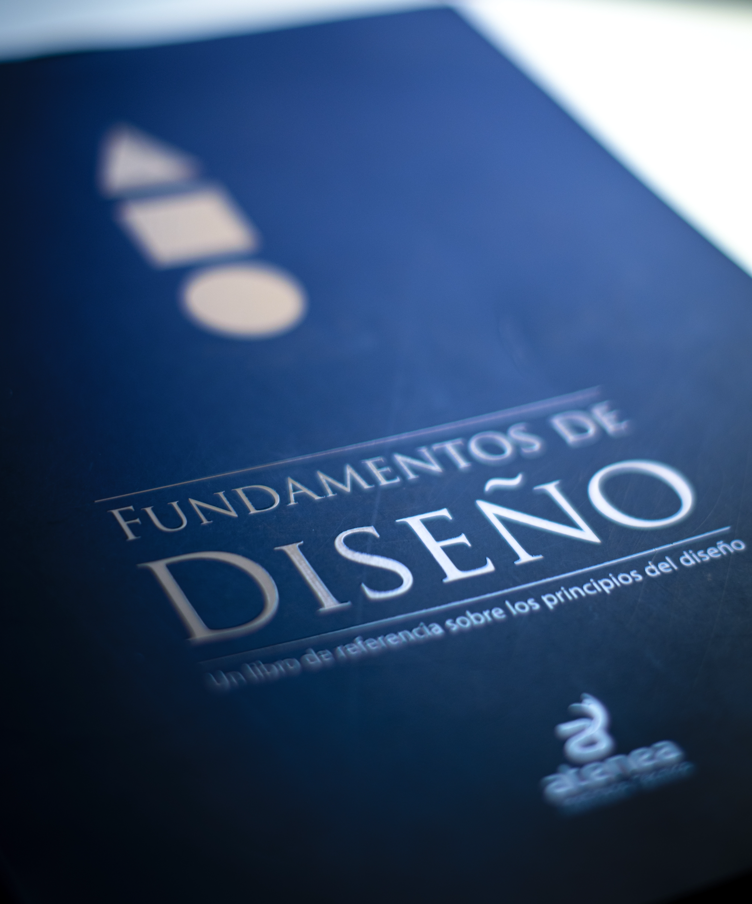

01 / DISEÑO EDITORIALProceso de diseño Memoriaimpresa.
Diseño, diagramación y fotografía de 13 libros sobre patrimonio cultural, historia urbana, gastronomía, transporte y barrios paceños entre otros.
Diseño gráfico · Ilustración · Fotografía
A través de la imagen, la forma y el lenguaje visual, puedo diseñar y construir sistemas de comunicación que transformen ideas en experiencias, integrando identidad, narrativa, tecnología y materia.
Explorar proyectos↘01 / Selección de proyectos
Diseñar es observar, interpretar y dar forma a la memoria. Una práctica que cruza imagen, territorio y cultura para construir narrativas visuales con identidad y propósito.

01 / DISEÑO EDITORIALProceso de diseño MemoriaDiseño, diagramación y fotografía de 13 libros sobre patrimonio cultural, historia urbana, gastronomía, transporte y barrios paceños entre otros.

02 / MUSEOGRAFÍADiseño e interpretación ArqueologíaInfografías, señalética, publicación digital, diseño web, fotografía.

03 / IDENTIDAD Y EVENTOHistoria y tradición Una nocheDiseño y diagramación, comunicación visual del evento, planificación del recorrido cultural, cobertura fotográfica y producción audiovisual.

04 / SISTEMA VISUALImagen referencial ilustraciónDibujos de diferentes temáticas que indagan en el uso de color y el manejo de la forma.

05 / DISEÑO Y DOCENCIABases del diseño gráfico FundamentosPublicación académica desarrollada para la Carrera de Diseño Gráfico del Instituto Técnico Superior ATENEA.
Las imágenes son recursos de referencia para definir la dirección visual. No representan necesariamente los proyectos originales.
 Tuni Condoriri · La Paz / Bolivia (PH:YAMM)
Tuni Condoriri · La Paz / Bolivia (PH:YAMM)
El diseñador
Proyectos editoriales, comunicación visual, fotografía y cultura. Una mirada transversal que parte de observar y comprender el contexto.
Más sobre mí →Conversemos
Para colaboraciones, consultas profesionales o proyectos culturales, puedes escribirme directamente.
Escríbeme ↗